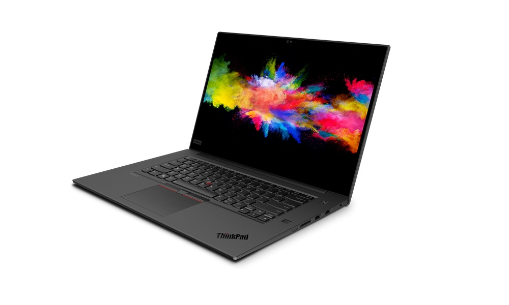
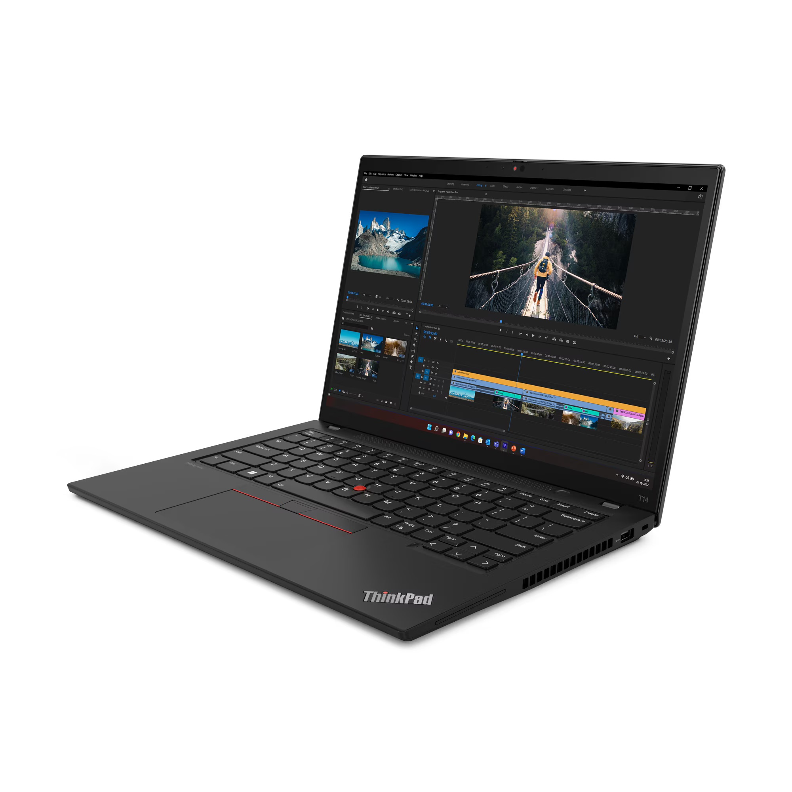
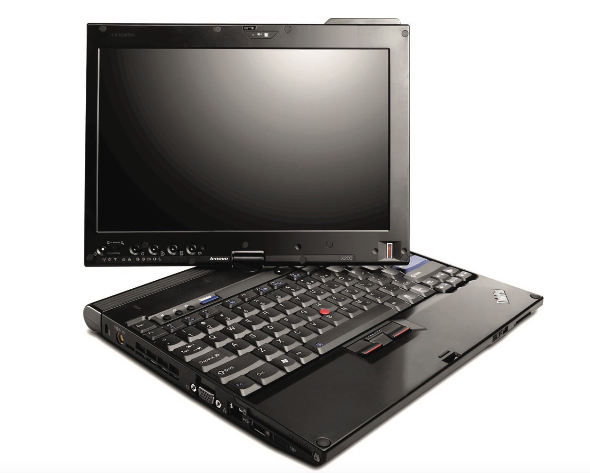
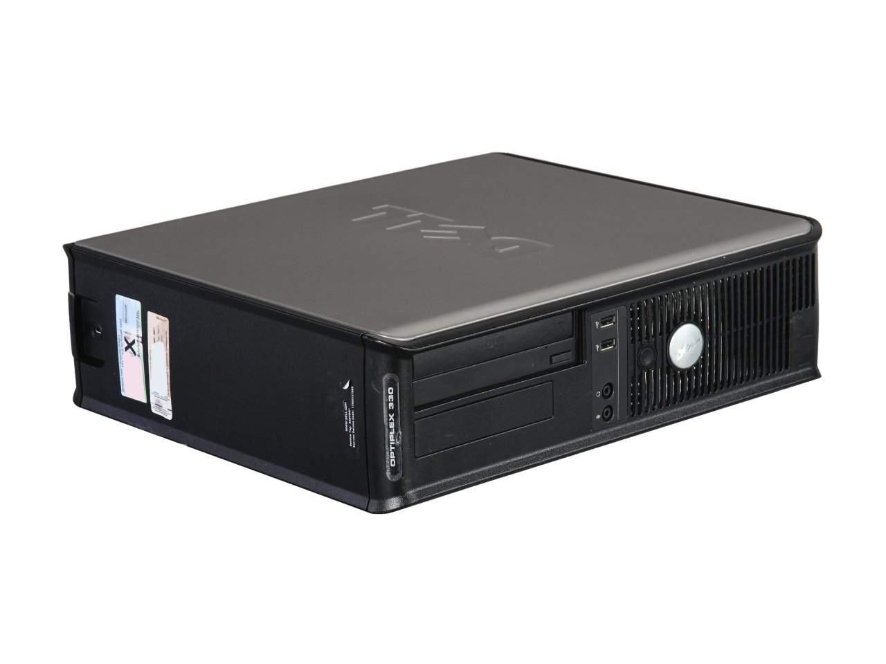
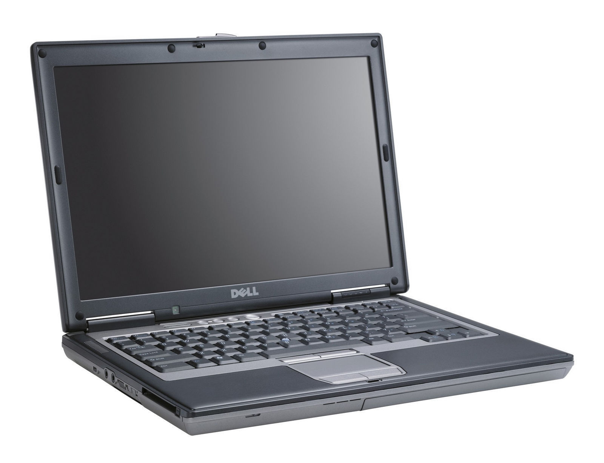
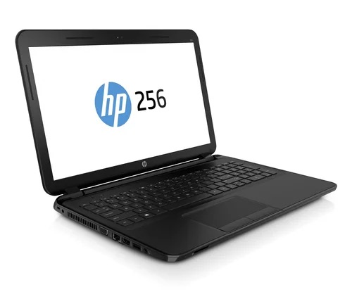

Things I like the most.
Computers and Operating Systems (linux ftw)
Cooking
Repairing electronics
English
The computers I like the most.
ThinkPad P1, A good portable 15.3-inch workstation, with no numpad.

ThinkPad T14, Modern but very classic looking versatile computer.

ThinkPad X200/X201/X220 Tablet, James Cameron used these on his
Titanic expedition.

Dell OptiPlex 330 SFF, The first computer that I had; standard
office desktop.

Dell Latitude D630, Breaking Bad laptop.

HP 256 G3. My first laptop, used it till the fan died. Absolute chad
of a laptop.

i like ThinkPads if you didn't know

The largest laptop is my old laptop that I mentioned. The
MacBook Air is the one that i'm using; and the netbook is old.
i like cooking
OS' I like
Technically Linux is a kernel, a part of a fully functional
operating system.
Windows has been a mess lately; due to Microsoft making Windows shit
with ads and and a lot of bugs. Windows 7 was the last good
"version" of Windows.
I'm using macOS for now with my base-model MacBook Air (9,1).
Horrible financial decision 4 years ago. the OS itself is quite good
with
macOS Sonoma being quite stable, with no bugs and
unexpected kernel panics.
This Page is UNDER CONSTRUCTION
Copyright 2009-2025. Microsoft Corporation. All Rights Reserved.